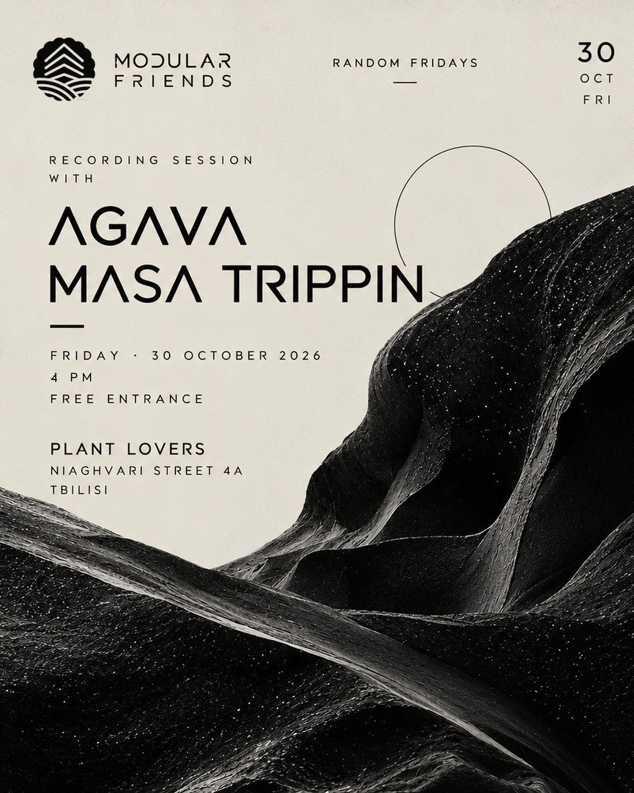

RANDOM FRIDAYS / 30 OCTOBER 2026
RECORDING SESSION
WITH AGAVA
& MASA TRIPPIN.
DATE & TIME
Friday, 30 October 2026
4 PM
ENTRANCE
FREE ENTRY
LOCATION
PLANT LOVERS
Niaghvari Street 4A
Tbilisi, Georgia
FORMAT
Live experimental electronic music and an open recording session.
NO TWO SETS ALIKE.
Modular Friends presents an open recording session with AGAVA and MASA TRIPPIN. Join us at Plant Lovers for an evening of live electronic improvisation.